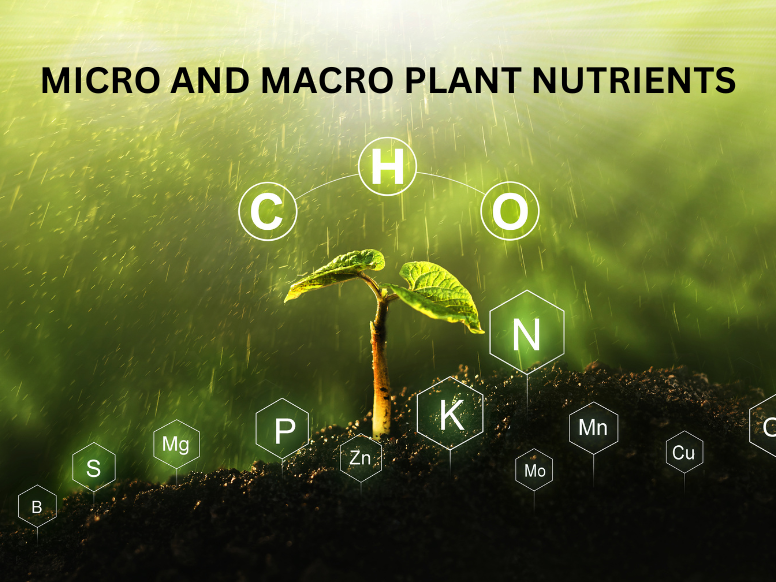

Macronutrients vs. Micronutrients in Plants | Kellogg Garden ...Plants require both macronutrients and
micronutrients for growth and development. Macronutrients are needed in larger quantities, such as nitrogen,
phosphorus, potassium, and calcium. Micronutrients, or trace minerals, are needed in much smaller amounts, examples include iron, zinc, and copper.
Macronutrients:
Nitrogen (N): Crucial for protein synthesis, chlorophyll production, and overall plant growth.
Phosphorus (P): Involved in energy transfer and root development.
Potassium (K): Plays a role in water balance, disease resistance, and starch formation.
Calcium (Ca): Important for cell wall structure and root development.
Magnesium (Mg): A component of chlorophyll and involved in enzyme activation.
Sulfur (S): Essential for protein synthesis and enzyme activity.
Micronutrients:
Iron (Fe): Important for chlorophyll synthesis and enzyme activity.
Manganese (Mn): Involved in photosynthesis and enzyme systems.
Zinc (Zn): Essential for enzyme activity and growth regulation.
Copper (Cu): Involved in various metabolic processes.
Boron (B): Plays a role in cell wall structure and sugar transport.
Molybdenum (Mo): Involved in nitrogen fixation.
Chlorine (Cl): Important for stomatal regulation.

Deficiency symptom
Macronutrient Deficiencies:
Nitrogen (N): Can cause general yellowing of older leaves, stunted growth, and sluggish development.
Phosphorus (P): May lead to a reddish or purple tint on leaves, especially in the undersides or along leaf margins.
Potassium (K): Often results in browning along the edges or tips of leaves, which can progress to curling or necrosis.
Calcium (Ca): Stunted growth, black patches on leaves, and chlorotic leaf veins.
Magnesium (Mg): Interveinal chlorosis (yellowing between veins).
Sulfur (S): Young foliage fades from dark green to light green.
Micronutrient Deficiencies:
Iron (Fe): Interveinal chlorosis, particularly in young leavescenter>